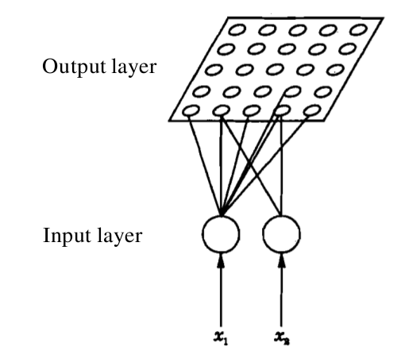
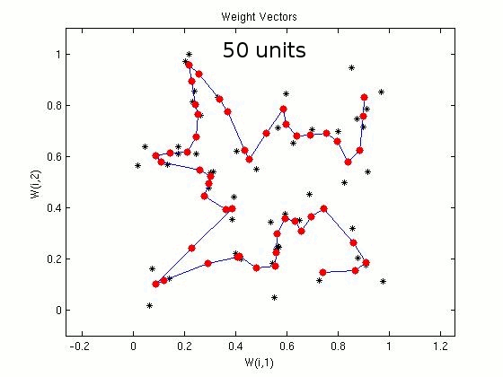
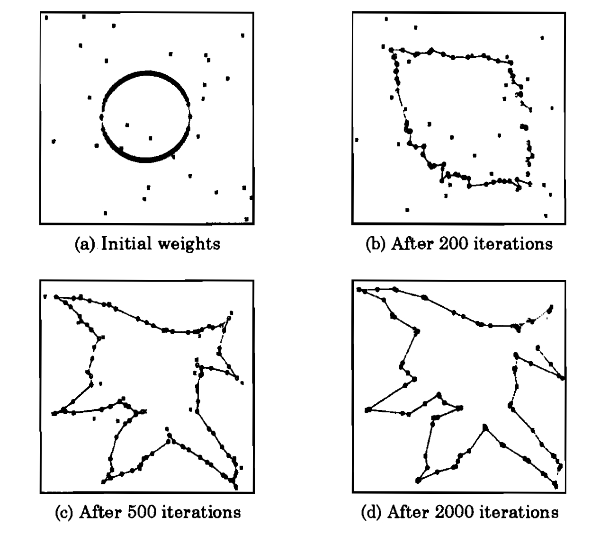

The objective of this experiment is to provide a suboptimal solution to the Travelling Salesman Problem (TSP), using the properties of self-organization feature maps (SOM). The focus is:
To illustrate the principle of self-organization for addressing the travelling salesman problem
To observe the suboptimal nature of the solution provided by SOM
To study the effect of structure of SOM on the solution

Description of self-organizing feature map
Self-organizing map (SOM) was proposed by T. Kohonen [Kohonen, 1982a], and it provides a way of visualizing data. In particular, high dimensional data can be reduced to lower dimensions using SOM. The map also helps in grouping similar data together. Thus the map helps in visualizing the concept of clustering by grouping data with similar characteristics. A SOM attempts to cluster the training data by detecting similarity between data points/ feature vectors. The map does not require external supervision, and hence represents an unsupervised way of learning.
Architecture of SOM
In a self-organizing map, the input is represented by an \(M\)-dimensional feature vector. The output layer consists of \(N\) units, where the units are arranged in the form of a grid. Each unit is a neuron/node. Each dimension of the input feature vector is associated with a unit/neuron in the input layer. A weight vector is associated with a unit/node/neuron in the output layer, and the dimension of this weight vector is same as that of the input feature vector. The map operates in two modes, namely, training and mapping. The process of training helps to build the map using (a large number of) input feature vectors, which are also known as training examples. The process of mapping a new input feature vector automatically identifies the region in the output whose neighbourhood units have similar properties.
|  |
Algorithm for learning
The training of SOM is based on the principle of competitive learning (Refer experiment 7, Artificial Neural Networks virtual labs). A training example is a set of inputs with some given number of nodes. Initially weights in the SOM network are assigned randomly. When a training example is presented to the network, Euclidean distances between the training feature vector and all the weight vectors are computed. The neuron in the output unit for which the distance is found minumum is said to fire. Which mean that the weights of this neuron and the neurons close to it in the SOM network are adjusted towards the input vector. The magnitude of the adjustment decreases with time and with distance of other neurons from the fired neuron. A neighborhood function is defined to specify the neurons whose weight vectors are updated along with that of the fired neuron. The region of the neighborhood function is broad initially, and the region shrinks gradually with successive iterations. This process is repeated for each input vector for a number of iterations. The SOM associates the output nodes with groups or patterns in the input data set.
Let us consider an \(N\)-unit output layer and \(M\)-dimensional input feature vectors. The following sequence of steps is involved in the learning process, i.e., the process of updating the weights.
Initialize the weights from \(M\) inputs to the \(N\) output units to small random values. Initialize the size of the neighbourhood region.
Present a new input feature vector.
Compute the distance between the input feature vector the weight vector associated with each neuron.
Select the neuron k which minimizes the distance.
Update the weight vector associated with neuron k, and also the weight vectors associated with neurons in the neighbourhood of neuron k.
Repeat steps 2 through 5 for all inputs, several times.
Mapping using a test feature vector
During mapping again, there will be one winning neuron, the neuron whose weight vector lies closest to the input vector. This will be determined by calculating the Euclidean distance between input vector and all the weight vectors. And then the test feature vector will be said to fire the winning neuron. The updation of weights for rest of the cycles follow the same algorithm as above.

Application of SOM to travelling salesman problem
Let us consider a SOM network with 1000 neurons in the output layer, for the travelling salesman problem of 100 cities. The 2-dimensional input represents the coordinate values of a city. The units in the output layer are arranged (indexed) along a closed curve or ring. The weights vectors corresponding to adjacent units are joined in the weight space. In the following demonstration, the plots show the coordinates of the cities (marked by symbol 'x') and the weight vectors (marked by symbol 'o'). The initialization of weight vectors along the rim of a ring is known as elastic ring approach in feature mapping. Plots show the closed path after 500, 1000 and 10000 iterations, respectively. Some of the cities may not be visited, which indicates the suboptimal nature of the algorithm.
For 100 cities and a SOM with 1000 neurons in the output layer
 |
Effect of varying the number of units in output layer of SOM
For the travelling salesman problem of 50 cities, we consider
SOM networks with different number of units/nodes in the output
layer. In the following demonstration, the plots show the coordinates
of the cities (marked in black) and the weight vectors (marked
in red). Plots show the closed path after 50, 100, 200 and 300
units in the output layer of SOM. Some of the cities may not be
visited, which indicates the suboptimal nature of the algorithm.
For 50 cities
|  |

Choose the number of input units to intialize the SOM. In this case, the input vector represents the coordinates of a city. So the input dimension is 2.
Choose the number K of nodes/neurons in the output layer. If N denotes the number of cities, then K should be greater than or equal to N.
Choose over the total number of iterations the SOM will go through. Each iteration involves adjustment of weights for all the neurons.
Choose the step size for iteration results display purpose for number of cities i.e. units in the output network. Also choose the iteration step size for generation of output.
Click on 'Next city' button or the 'Next Itern' button to run simulations.

Observe the behaviour of the SOM network as a function of number of iterations. As the number of iterations increases, the weights of the SOM network align closer to the coordinates of the cities. Let us consider a SOM network with K-unit output layer and a 2-unit input layer. In this case, K=100 and N=30 (i.e., 30 cities and 100 neurons in the output layer). The 2-dimensional input represents the coordinate values of a city. The units in the output layer are arranged along a closed curve. The weights vectors corresponding to adjacent units are joined to form a closed curve. In the following figure, plot (a) shows the coordinates of the cities (marked by symbol 'x') and the weight vectors (marked by symbol 'o'). The initialization of weight vectors along the rim of a ring is known as elastic ring approach in feature mapping. Plots (b), (c) and (d) show the closed path after 200, 500 and 1000 iterations, respectively. Note that some of the cities may not be visited.
 Observe the output of the network for different number of cities. Start from a small number of cities (such as 10), and go up to a large number of cities (such as 100 or more). Note that the solution provided by SOM is suboptimal, in the sense that coordinates of some cities may not be covered by the weights of the network. Observe this behaviour for varying number of cities.
The variation of neighbourhood function for different iterations needs to be scheduled. A larger neighbourhood function is used initially, and the size of the neighbourhood is reduced progressively. The effect of this change can be observed.
Number of cities = 100 and number of neurons in the output layer = 2000
Number of cities = 100 and number of neurons in the output layer = 50
In each case, compute the number of cities that have not been visited even once.
Plot the percentage of cities visited, as a function of the number of iterations in either cases.
Observe the performance of self-organizing map for travelling salesman problem for the following conditions:

B. Yegnanarayana, Artificial Neural Networks, New Delhi, India : Prentice-Hall of India, p. 298, 1999.
T. Kohonen, "Analysis of simple self-organizing process", Biol. Cybernet., vol. 44, pp. 135-140, 1982a.
J.J. Hopfield and D.W. Tank, "Neural computation of decisions in optimization problems", Biol. Cybernet., vol. 52, pp. 141-152, 1985.